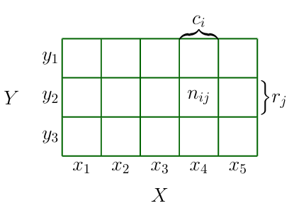
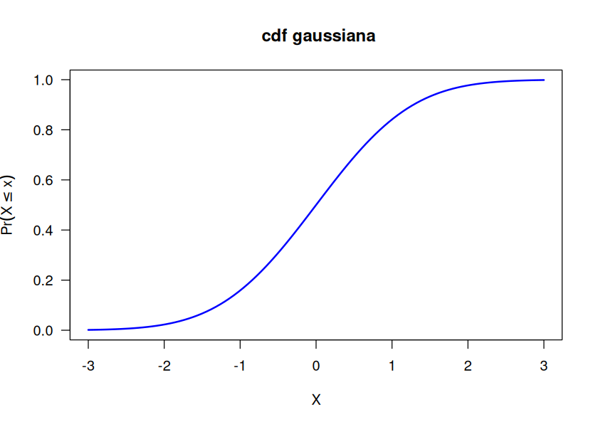

Suponer que \(X\) representa una cantidad desconocida de interés, como la temperatura de una máquina. Si los valores de \(X\) son desconocidos o cambian, decimos que \(X\) es una variable aleatoria, o VA. El conjunto de todos los valores posibles se denota como \(\mathcal{X}\), llamado espacio muestral o espacio de estados. Un evento es un subconjunto de valores del espacio muestral. Por ejemplo, si \(\mathcal{X}\) es el lado de un dado al ser lanzado, \(\mathcal{X} = \{ 1, 2, 3, 4, 5, 6 \}\), el evento “cae 1” se denota \(X = 1\), y “ver un número impar” se denota \(X \in \{ 1, 3, 4\}\), el evento “cae entre 4 y 6” como \(4 \leq X \leq 6\).
Nota: no confundir el espacio muestral \(\mathcal{X}\) con la VA \(X\). En el segundo caso, la VA toma valores numéricos, es una función de los elementos de \(\mathcal{X}\) que mapea de \(\mathcal{X}\) al conjunto de los reales o naturales. \(\mathcal{X}\) puede o no consistir en valores numéricos. Por ejemplo, si el espacio muestral \(\mathcal{X}\) son los posibles resultados de lanzar dos monedas tenemos \(\mathcal{X}=\{HH, HT, TT\}\). Al evento “cantidad de veces que sale caras, o \(H\)”, la variable \(X\) mapea de \(\mathcal{X}\) tres posibles resultados: \(X(HH)=2, X(HT)=1, H(TT)=0\).
2.1.1. Variables aleatorias y sus distribuciones
VA discretas
Si \(\mathcal{X}\) es finito o contable infinito (cada miembro de \(\mathcal{X}\) puede asociarse con un elemento de \(\mathbb{N}\)), entonces \(X\) es una variable aleatoria discreta. En este caso, denotamos la probabilidad de un evento que \(X\) toma como \(\text{Pr}(X=x)\). Definimos la función de masa de probabilidad (\(\text{\sf pmf}\) en inglés) como la función que computa la probabilidad de cada valor de la VA
Podemos imaginarnos la distribución de probabilidad de muchas variables aleatorias como el llenado de un arreglo multidimensional. Por ejemplo, en la siguiente imagen (MML-6.2)

muestra dos variables aleatorias bivariadas, \(X\) (que puede tomar valores \(x_i, i = 1, 2, \dots, M\)) y \(Y\) (que puede tomar valores \(j=1, 2, \dots, L\)). La probabilidad (conjunta) de que \(X=x, Y=y\) se define como
\(p(x, y)\) se lee “la probabilidad de \(x\) y \(y\)”, en ocasiones escrito usando notación de teoría de conjuntos como \(p(x \cap y)\). Cada entrada (cada celda) en la tabla se calcula contando la cantidad de casos que \((x_i,y_j)\) suceden conjuntamente
En la tabla, si contamos todos los casos de la fila \(j\) tenemos la cantidad total de veces que \(y_j\) sucede, y lo llamamos \(r_j\). Si contamos la columna \(i\) tenemos la cantidad total de veces que \(x_i\) sucede, y que llamamos \(c_i\).
La probabilidad marginal de \(x\), es decir, la probabilidad que \(X=x\) sin importar el valor de \(Y\) se escribe como \(p(x)\) y se calcula como sigue
\[
p(X = x_i) = p(x_i) = \frac{c_i}{N} \tag{2}
\]
El número de casos en la columna \(i\) es la suma de casos en cada celda en esa columna, por lo que \(c_i = \sum_j n_{ij}\) (dejando fija \(i\)). Por lo tanto,
\[
p(x_i) = \sum_{j=1}^Lp(x_i, y_j) \tag{3}
\]
A la ecuación (3) se le conoce como la regla de la suma. Notar que se fija la columna \(i\) y se itera sobre las filas \(j=1, 2, 3\), por lo que por cada columna \(i\) tenemos una probabilidad \(p(x_i)\).
Si consideramos los casos en los que \(X=x_i\), la fracción de casos en los que \(Y=y_j\) se escribe como \(p(Y=y_j | X=x_i)\), probabilidad que es conocida como probabilidad condicional de \(Y=yj\)dado que \(X=x_i\). Se obtiene encontrando la fracción de puntos en una columna \(i\) que caen en una celda \((i,j)\) dada
\[
p(y_j | x_i) = \frac{n_{ij}}{c_i} \tag{4}
\]
Notar que \(c_i\) es la cantidad total de valores para los cuales \(X=x_i\), y \(n_{ij}\) es una celda particular. Con las ecuaciones (1), (2) y (3) podemos derivar la siguiente relación:
La ecuación (6) es llamada Teorema de Bayes, y tiene una importancia en ML y estadística que no puede ser exagerada.
Muestreando de una distribución conjunta
Crearemos un data frame que contenga posibles valores de \(X\) y \(Y\), así como sus frecuencias de ocurrencia. Después, usando la función slice_sample() del paquete {dplyr} tomaremos una muestra aleatoria. Básicamente, lo que hace slice_sample() es tomar filas (slices) del data frame original, solo que en este caso permitiremos que cada fila pueda ser seleccionada más de una vez. La cantidad de veces que cada fila puede ser seleccionada será, aproximadamente, wgts/sum(wgts) * n.
library(tidyverse)library(kableExtra)library(IRdisplay)# crear distribución conjunta {X,Y}data_for_sampling <-data.frame(Y =rep(0:3, times =3),X =rep(0:2, each =4))data_for_sampling <- data_for_sampling |>mutate(wgts =c(0, 3, 9, 3, 2, 18, 18, 2, 3, 9, 3, 0))# tomar una muestra aleatoria de la dist conjunta X,Y, usando wgts como pesos,# o frecuencia relativa de cada celda.set.seed(452) # para reproducibilidadsampled_data <- data_for_sampling |>slice_sample(n =10000, # 10k muestrasreplace =TRUE, # con reemplazoweight_by = data_for_sampling$wgts # pesos relativos de cada celda )# crear una tabla de frecuenciatable(sampled_data[, c(1, 2)]) |>as.data.frame.matrix() |>rownames_to_column("Y/X") |>kbl() |>kable_classic_2(full_width = F) |>kable_styling() |>as.character() |>display_html()
Y/X
0
1
2
0
0
325
400
1
439
2544
1351
2
1273
2524
418
3
433
293
0
De acuerdo con la tabla anterior, ¿cuál es la probabilidad \(p(y=0, x=1)\)?
xt <-table(sampled_data[, c(1, 2)]) |>as.data.frame.matrix()# obtener la distribución conjunta de cada celda usando la eq 1xt_prob <- (xt /sum(xt))# colorear la celda que corresponde a y=0 x=1xt_prob[1, 2] <-cell_spec(xt_prob[1, 2], background ="red", color ="black")# imprimir la tablaxt_prob |>kbl(escape =FALSE, booktabs =TRUE) |>kable_classic_2(full_width = F) |>kable_styling() |>as.character() |>display_html()
0
1
2
0
0.0000
0.0325
0.0400
1
0.0439
0.2544
0.1351
2
0.1273
0.2524
0.0418
3
0.0433
0.0293
0.0000
La celda en rojo corresponde a la probabilidad
\[
p(y=0, x=1) = \frac{325}{10000}
\]
Ahora, para calcular la probabilidad condicional \(p(x=1|y=0)\) debemos obtener la probabilidad marginal de \(y\), o \(p(y)\).
En general, la distribución condicional \(p(x | y=0)\) se puede obtener como sigue
sampled_data |># filtrar la filafilter(Y ==0) |># contar los casos de X condicionales a y=0; crea columna ncount(X) |># obtener la funcion de masamutate('p(x|y=0)'= n/sum(n)) |>kbl(escape =FALSE, booktabs =TRUE) |>kable_classic_2(full_width = F) |>kable_styling() |>as.character() |>display_html()
X
n
p(x|y=0)
1
325
0.4482759
2
400
0.5517241
La distribución condicional de \(x|y=y\) puede verse totalmente diferente que la distribución marginal \(p(x)\). En la siguiente imagen, tomada de Bishop (PRML-1.1), se ilustra la distribución de dos variables \(X\) y \(Y\). \(X\) puede tomar 9 valores posibles, y \(Y\) 2. La distribución marginal de \(X\), la distribución independientemente de qué valores tome \(Y\), tiene una forma más achatada (más amplia, con mayor varianza) que la distribución condicional a \(Y=1\).
VA continuas
Si \(X\in \mathbb{R}\) es una función real, se denomina variable aleatoria continua, y es más natural especificar que \(X\) se encuentre en un intervalo, e.g,, \(a \leq X \leq b\), dado que en este caso no se puede crear un conjunto contable de valores posibles que \(X\) puede tomar, pero podemos crear un conjunto finito de intervalos en la linea real, y asociar los eventos de \(X\) que están en esos intervalos.
Distribución acumulada (cdf)
Sea \(A = (X \leq a)\), \(B = (X \leq b)\) y \(C = (a < X \leq b)\) en donde \(a < b\). Tenemos que \(B\) es la unión de \(A\) y \(C\), es decir, \(B\) toma todos los valores que toman \(A\) y \(C\). Dado que \(A\) y \(C\) son mutuamente excluyentes, la probabilidad de \(B\) es
Por ejemplo, en la siguiente figura a la izquierda se representa una variable aleatoria normal con media 0 y desviación estándar de 1, conocida como distribución normal estándar, y representada como \(\mathcal{N}(\mu=0, \sigma = 1)\) o simplemente \(\mathcal{N}(0, 1)\). Para la densidad de probabilidad normal, usamos dnorm(x, mean, sd), que nos retorna la densidad en x.
A la derecha se representa el área equivalente en la cdf, usando pnorm.
options(repr.plot.width=7*2, repr.plot.height=5)par(las =1, mfrow =c(1, 2))# graficar la curva usando la función de dnorm; curve crea in-situ 101 valores# para x que van de from a to. Es idéntico a# x <- seq(from, to, length = 101); plot(x, dnorm(x, 0, 1))# figura a la izquierda, pdfcurve(dnorm(x, 0, 1),from =-3, to =3,col ="blue",ylab ="p(x)",lwd =2)from_x <--1.5to_x <-1.5# valores para x y y en el área sombreadasx <-c(from_x, seq(from_x, to_x, 0.01), to_x)sy <-c(0, dnorm(seq(from_x, to_x, 0.01)), 0)# crear área sombreada con sx y sypolygon( sx, sy,col ="#B3B3FF")text(x =0,y =dnorm(0, 0) /2,labels =expression(integral(p(x) * dx, -1.5, 1.5)),cex =1.2)text(x =0,y =dnorm(0, 0) /3,labels ="= P(1.5) - P(-1.5)",cex =1.2)# figura a la derecha, cdfcurve(pnorm(x, mean =0, sd =1),from =-3, to =3, main =" cdf gaussiana",xlab ='X', ylab =expression(Pr(X <= x)),col ='blue', lwd =2)from_x <--1.5# en rigor, debería ser -Infto_x <-1.5sx <-c(from_x, seq(from_x, to_x, 0.01), to_x)sy <-c(0, pnorm(seq(from_x, to_x, 0.01)), 0)polygon( sx, sy,col ="#B3B3FF")

En R, la función de densidad acumulada (\(\text{\sf cdf}\)) para la distribución normal se obtiene con pnorm(x, mean, sd) en donde x es un vector de cuantiles, que es el, o los, valores en \(x\) para el cual(es) deseamos obtener su probabilidad.
Para obtener el área sombreada en la anterior figura, usamos pnorm(b) - pnorm(a)
pnorm(1.5, mean =0, sd =1) -pnorm(-1.5, 0, 1)# mean = 0, sd = 1 están por defecto, pero los ponemos para mayor claridad
0.866385597462284
El área que cubre pnorm(1.5) va desde \(-\infty\) a 1.5, y el área de pnorm(-1.5) va de \(-\infty\) a -1.5.
En contraste con las VA discretas, la probabilidad de que una variable continua \(X\in \mathbb{R}\) tome un valor particular, \(p(X = x)\), es 0. Es como integrar la función de densidad de la siguiente manera:
\[
p(a \leq X \leq a) = \int_a^b p(x)dx = P(a) - P(a)
\]
Por esta razón, con \(\text{\sf pdf}\) solo calculamos probabilidades en intervalos.
Para VA continuas, las reglas de suma y producto son
\[
\begin{align*}
\text{ \bf{regla de la suma}} \quad\quad &p(x) = \int_y p(x,y) \\
\text{ \bf{regla del producto}}\quad\quad &p(x, y) = p(y|x)p(x)
\end{align*}
\]
Ejercicios de tarea
VA discretas
La \(\text{\sf pmf}\) de una distribución de probabilidad discreta de Poisson permite calcular la probabilidad un número dado de eventos en un intervalo, dada una tasa de ocurrencia \(\lambda\). Por ejemplo, ¿cuál es la probabilidad de que ocurran 3 choques en un día en López Mateos si la tasa de ocurrencia es de 2 choques por día? Con la \(\text{\sf pmf}\)
Suponer que un manufacturador de un tipo de botana sabe que el peso total del paquete de botana está distribuido normalmente con una media de 80.2 gramos y una desviación estándar de 1.1 ramos. ¿Cuál es la probabilidad de que un paquete de botana pese menos de 78 gramos?
Bajo las mismas asunciones anteriores, ¿cuál es la probabilidad de que un paquete dado tenga un peso que esté entre 2 desviaciones estándar de la media? Es decir, \(p(x \in [\mu - \sigma, \mu + \sigma])\).
Grafica el área de la pdf que se cubriría en el ejercicio 2.